Open to new opportunities
ÁlvaroRodríguez Molina
Software Engineer · Full stack, integration & automation
Dublin, Ireland
I build the software that sits between an operational problem and the people living with it.
I'm Álvaro Rodríguez Molina. I work across frontend, backend, APIs and Azure, and I've spent enough time on warehouse floors, SAP screens and sales calls to know that the best tool is the one people actually use.
- Now
- Fusion Analyst at Synovia Digital
- Originally from
- Sevilla, Andalucía, Spain
- Focus
- Azure, APIs, auth, automation, SAP
- Speaks
- Spanish, English, a bit of German
01
Selected work
A mix of client work I can talk about and things I built for myself because I wanted them to exist.
- 01
Customs Operations Platform
A customs platform for a private logistics client that handles GB–NI movements end to end through the API of HMRC's Trader Support Service (TSS): safety and security filings (ENS), simplified frontier and supplementary declarations, and full frontier declarations. Data comes in three ways (shipment emails read through Microsoft Graph, Excel uploads or manual entry in the portal) and is extracted, validated and pre-filled, so the team only reviews. Flask on Azure SQL, deployed with Docker.
Flask · Azure SQL · Microsoft Graph · TSS API · Docker · Render
- 02
Support & Operations Platform
An internal platform for the company's support and operations teams: secure access, ticket analytics, SAP-to-Snowflake data repair and an in-house AI assistant.
- Corporate sign-in with Microsoft Entra ID, an extra JWT layer and role-based views, with automated emails when someone is granted access to a section.
- Transactions that pull tickets from an API into internal databases to monitor and analyse each person's support work, plus a built-in feedback system.
- Jobs that fill missing Snowflake data straight from the SAP S/4HANA API, with report generation.
- File search through SMTP logs and interface movements.
- In-house AI assistant (beta): built for the company, runs without paid API tokens and resolves administrative support questions.
Microsoft Entra ID · JWT · RBAC · SAP S/4HANA API · Snowflake · SMTP · In-house AI
- 03
Live AI Radar
A GitHub Action wakes up every morning, reads official AI and dev-tooling feeds, and commits a JSON file. This page renders it. The bot touches data, never the layout.
Node.js · GitHub Actions · RSS · JSON
- 04
Bubble Planning OS
My own planner: daily focus, a weekly view, an Eisenhower matrix and a vault for decisions. Built because every to-do app I tried was either too much or too little.
HTML · CSS · JavaScript · localStorage
- 05
alvrich gym
A monthly training plan, daily weight log and progress view. Small, fast and exactly as opinionated as I am about leg day.
HTML · CSS · JavaScript
- 06
This site
React and TypeScript with SCSS, built with Vite and prerendered so it reads without JavaScript. Ten languages, light and dark themes, eight accent colours, and built automatically by GitHub Actions on every push.
React · TypeScript · SCSS · Vite · GitHub Actions · Vercel
02
Experience
I didn't take the straight road into software, and I think it shows in a good way: I've been the user, the trainer and the person on the phone with the client.
Fusion Analyst · Synovia Digital
Working across full-stack development, integration and automation, turning operational requirements into practical software for logistics environments.
- Build and support full-stack integration platforms that combine frontend apps, Python/FastAPI backends, APIs, authentication, databases and cloud services.
- Develop and maintain Azure solutions integrating Azure SQL, Microsoft Entra ID, Microsoft Graph, Outlook and external APIs.
- Design API-driven automation and real-time data workflows for extraction, processing, validation and database updates.
- Contribute to logistics and customs automation with SAP EWM, TSS APIs, Snowflake, Azure Functions and Blob Storage, including automated TSS declaration workflows.
- Build client-facing tools and operational dashboards that simplify complex workflows, give visibility over data and cut manual processing.
- Help define architecture, repository structure, infrastructure, deployment strategy and development standards, with technical coordination and knowledge transfer across the team.
AI Visual QA Specialist · Mercor
Improving the visual quality, consistency and professional usability of AI-generated presentations through structured evaluation and feedback.
- Reviewed layouts, typography, spacing, slide structure and visual hierarchy so AI-generated decks were consistent and ready for professional use.
- Spotted recurring visual issues: branding inconsistencies, chart design problems, overlapping elements and formatting defects.
- Evaluated AI-generated writing for clarity, tone, concision and professionalism.
- Applied structured rubrics and reference material to give evidence-based feedback, and helped calibrate AI outputs against human quality standards.
Multimodal AI Training Specialist · Outlier
As a freelancer, I created video, image, audio and text content that simulates AI-generated output, and gave human feedback used to train multimodal AI models.
Primeline Group
SAP Administrator
SAP S/4HANA EWM support and warehouse process management. I optimised workflows and trained end users on the system, which helped adoption.
System Admin
- Managed order distribution in Gaina Software, system updates and shipment coordination to keep deliveries on time and on KPI.
- Ran data analysis and reporting in Excel.
- Improved workflows and team performance through clear communication on Microsoft Teams.
General Operative
Software Developer · Getronics
Java testing with Spring Boot, JUnit and Mockito for Notific@, the notification system of the Junta de Andalucía.
Stratton Global
Energy Advisor & Business Consultant
- Developed advanced sales techniques and marketing strategies, helping clients achieve significant savings.
- Mentored team members eager to learn sales methodologies.
Energy Advisor
Store Clerk & Digital Manager · El Tortillón
Managed social media, created digital content and designed branding, including logos for new businesses like “Don Heladón”.
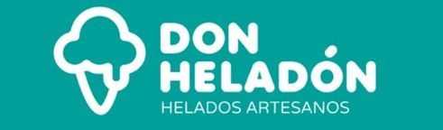
Instagram
Education
- Computer EngineeringUniversidad de Sevilla · 2019 — 2024
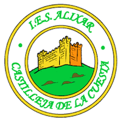
Web Application Development (CFGS DAW)IES Alixar · 2022 — 2024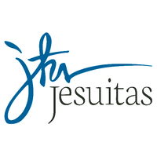
Technological BaccalaureateInmaculado Corazón de María Portaceli · 2017 — 2019
Volunteering
- Volunteer · ChildrenTu mundo Portaceli · 2017 — 2018Volunteering with children at Colegio Blanca Paloma, in Los Pájaros (Seville). A great experience, full of emotions.
Certificates
- React
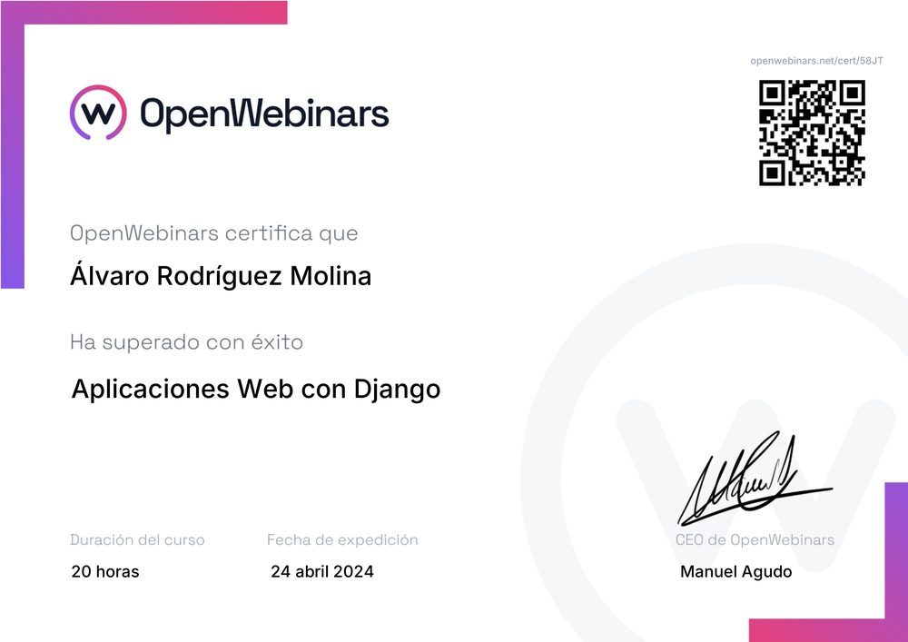
Aplicaciones Web con Django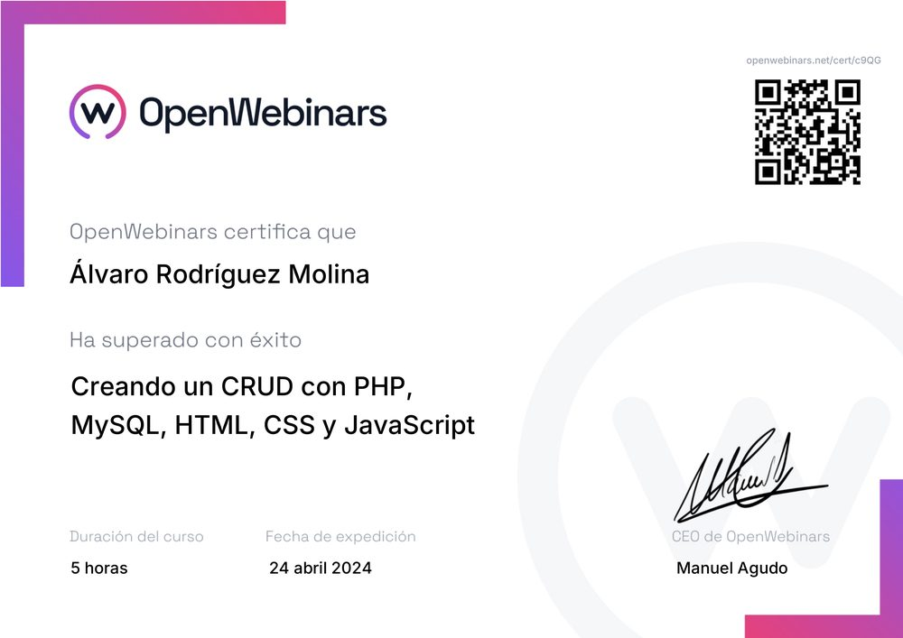
Creando un CRUD con PHP, MySQL, HTML, CSS y JavaScript- Desarrollo full-stack práctico: configuración profesional de proyectos
- Fundamentos del desarrollo web: Full Stack o Front-end
- Python
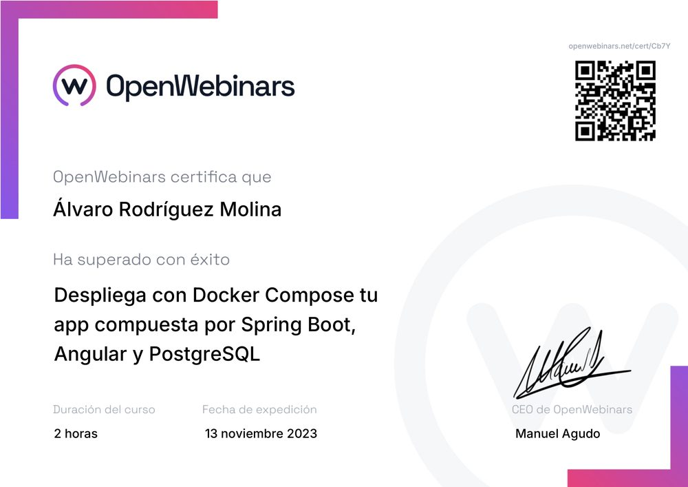
Despliega con Docker Compose tu app compuesta por Spring Boot, Angular y PostgreSQL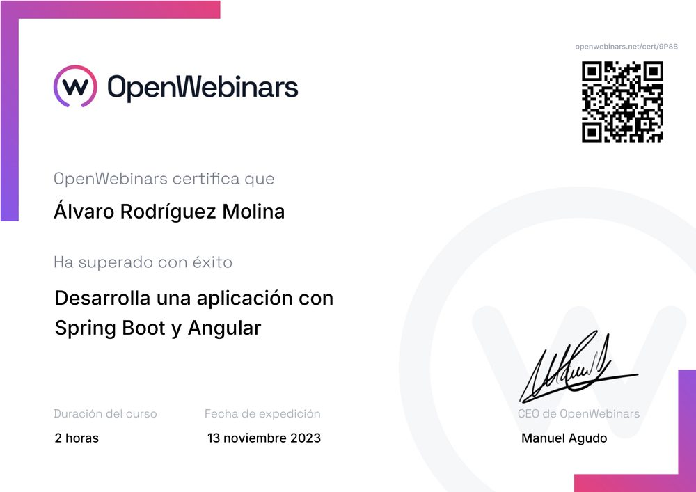
Desarrolla una app con Spring Boot y Angular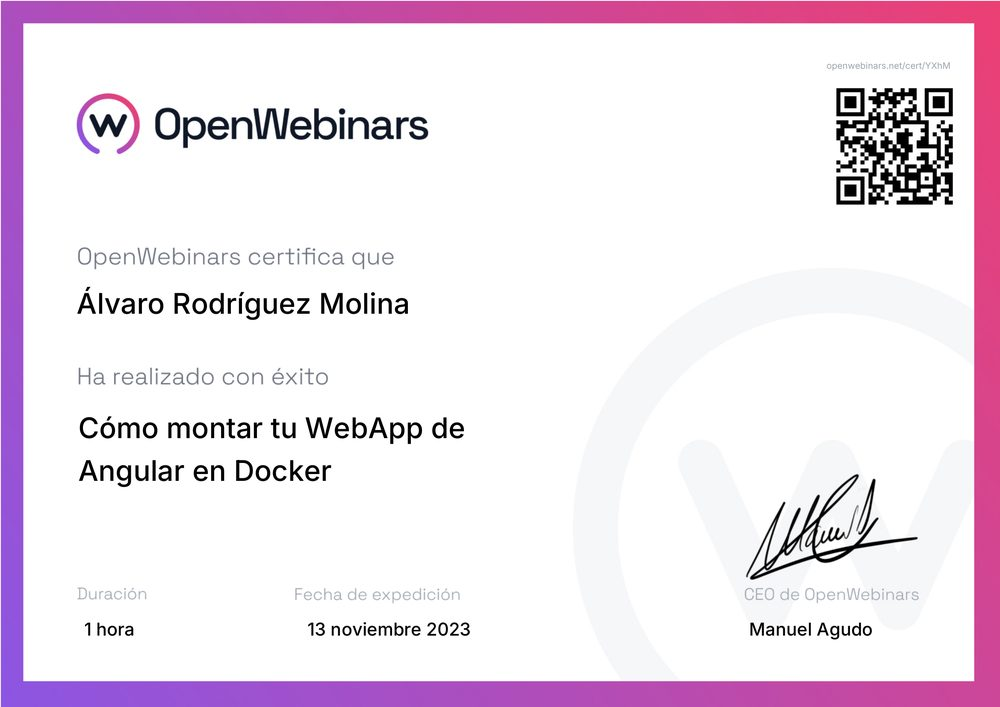
Cómo montar tu WebApp de Angular en Docker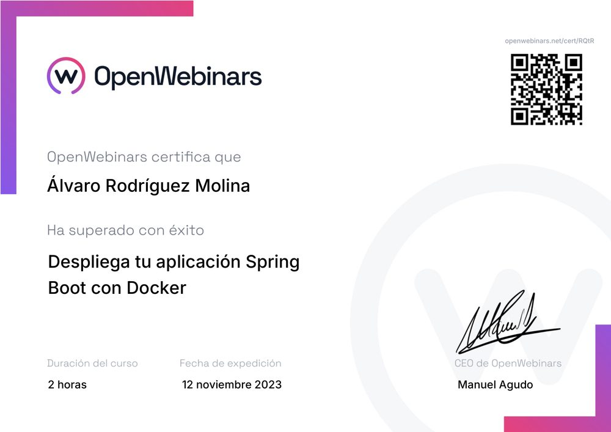
Desplegar app Spring Boot con Docker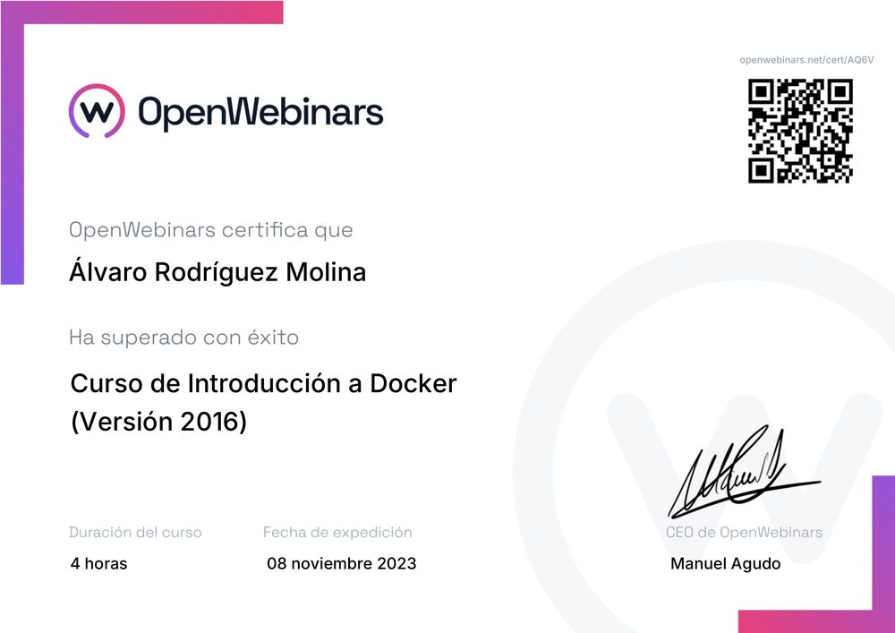
Curso de Introducción a Docker- Node.js
- Java
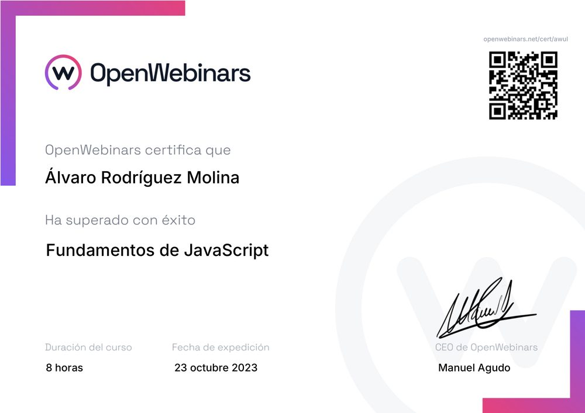
Fundamentos de JavaScript- MySQL
03
What I work with
Not a list of everything I've touched once, just what I'd be comfortable using on your project next week.
- Languages
- Python, Java, JavaScript, TypeScript, SQL
- Frameworks
- React, Angular, Node.js, Express, Spring Boot, Django, Flask
- Cloud & APIs
- Azure, Azure SQL, Microsoft Graph, REST, Docker, Render, Vercel
- Auth & security
- OAuth2, JWT, Microsoft identity, CORS, API security
- Data
- PostgreSQL, MySQL, MongoDB, Pandas, Power BI, Excel
- Business systems
- SAP S/4HANA EWM, CRM, ServiceNow, SharePoint
- AI
- AI agents, automation, multimodal data, human-in-the-loop evaluation
- Ways of working
- Agile, CI/CD, technical documentation, UML
04
What I'm reading
Collected automatically each morning from official AI and developer-tooling sources.
- Loading today's signals…
05
Off the clock
SevilleDublin
I grew up in Seville and moved to Ireland to work, which taught me more about patience, rain and good coffee than any course could.
I like turning small personal annoyances into small tools.
Gym
Training most days, logged in a tracker I built for it.
- Strength
- Weight log
- Leg day
Planning
Every week starts on paper, or rather in a planner I made because no app fit.
- Daily focus
- Weekly view
- Eisenhower
AI
Reading what's new every morning, served by a radar that collects it for me.
- Agents
- LLMs
- Dev tools
My calendar
Where everything above meets: birthdays, career milestones, certificates, tasks and workouts, month by month and year by year.
- Events
- Career
- Certificates
- Year view
06
Have a messy process?Let's make it boring.
I'm open to full-stack, integration and automation roles, in Ireland or remote. The fastest way to reach me is email.
alvrodmol@gmail.com